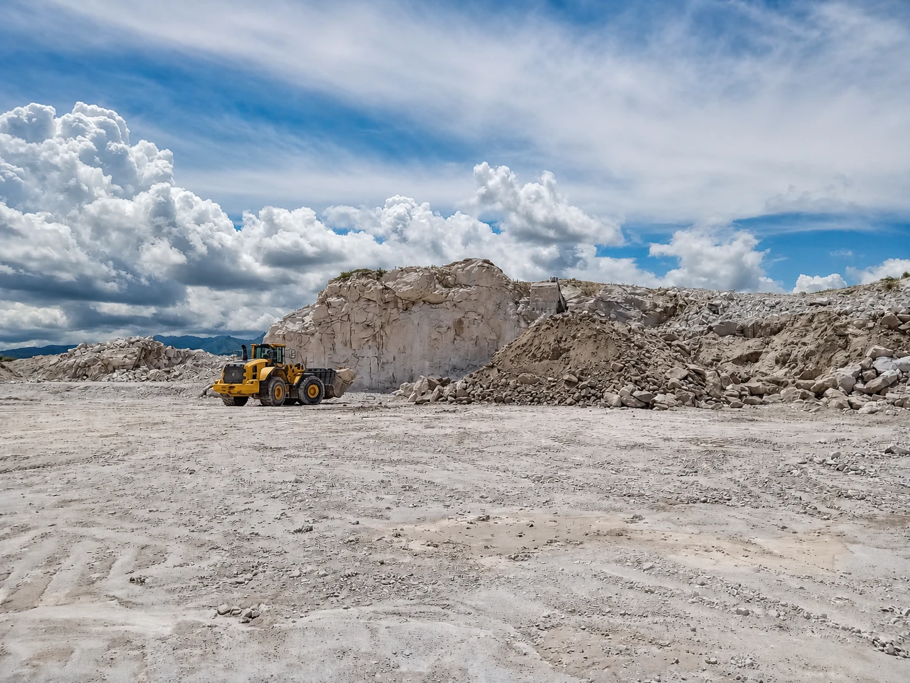
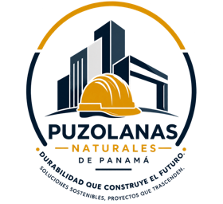
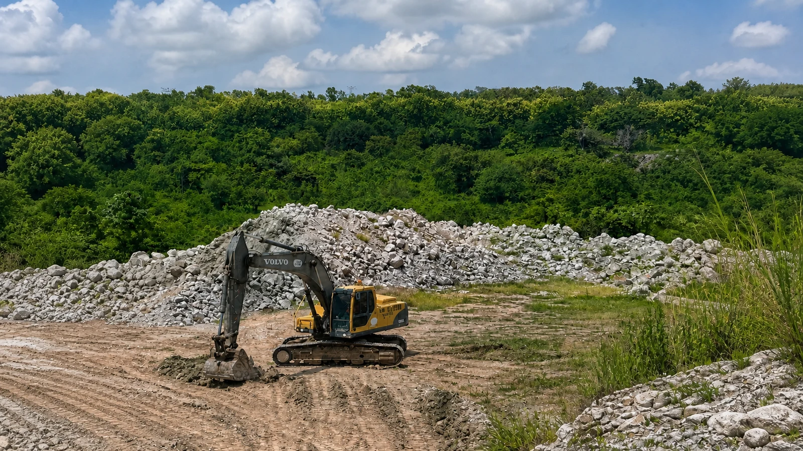
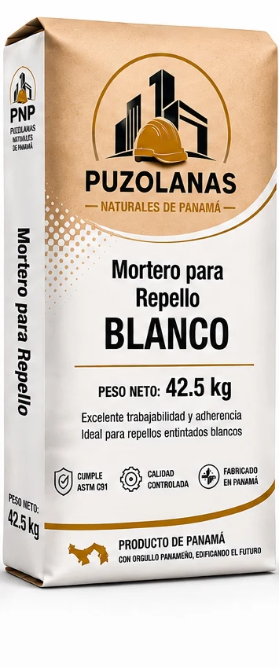
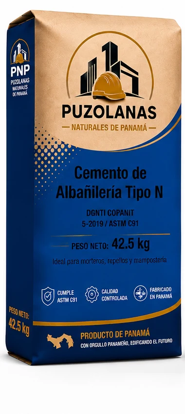
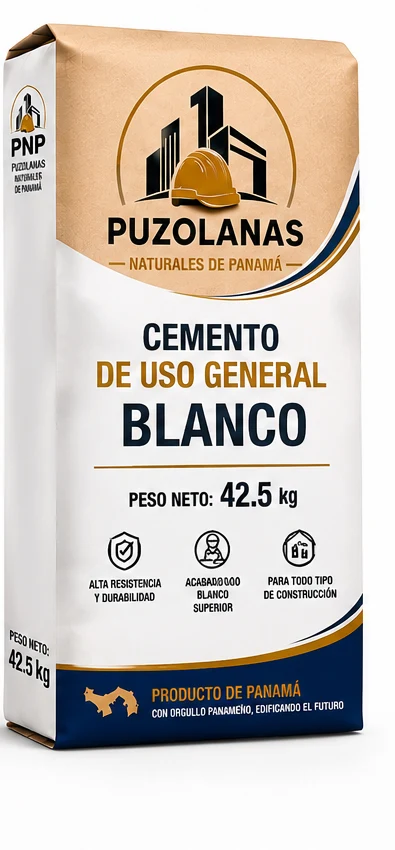
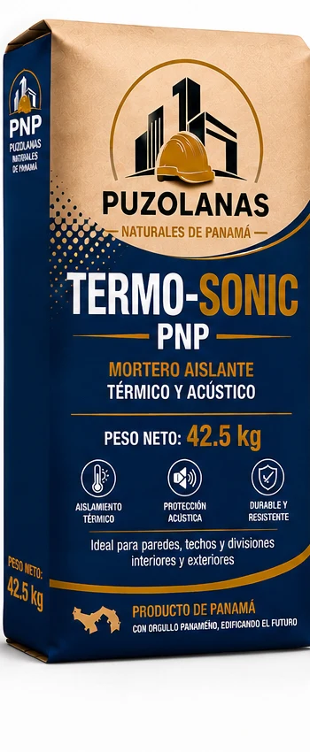
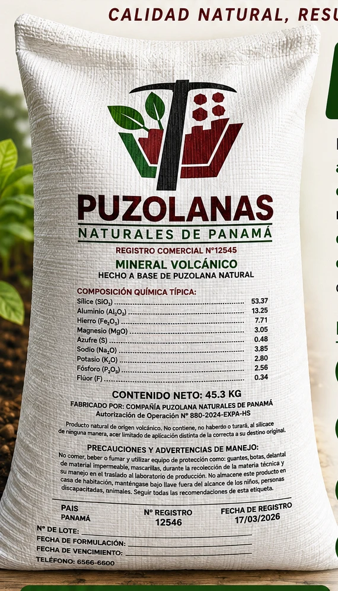
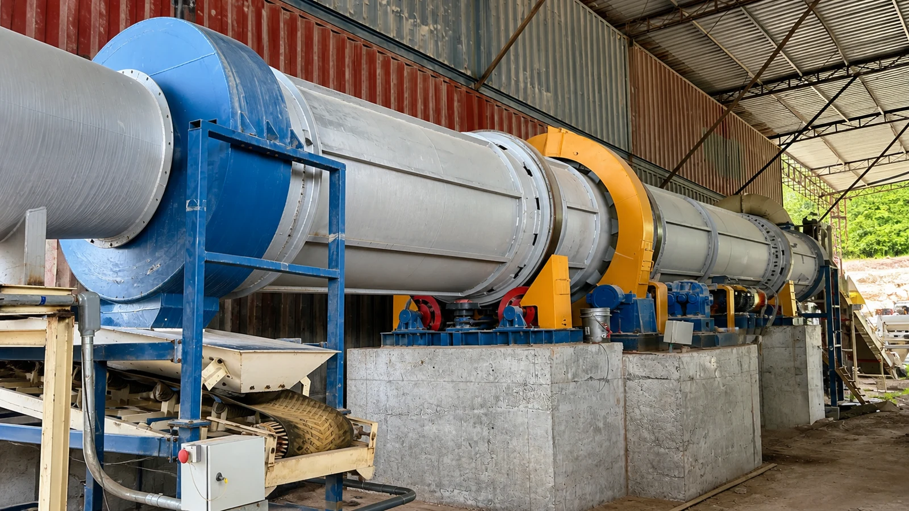
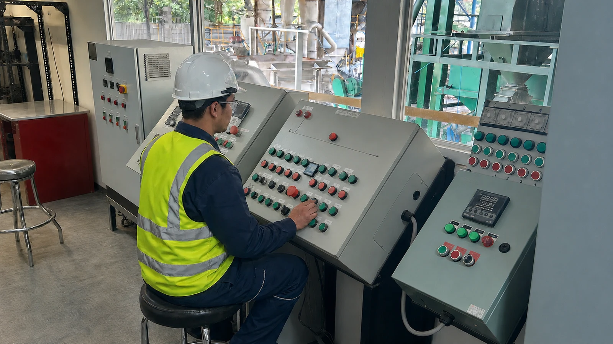

ADICIÓN MINERALCONCRETO Y CEMENTO
Puzolana molida
Adición mineral para formulaciones de cemento y concreto con requerimientos de durabilidad.

PUZOLANAS NATURALESDE PANAMÁORIGEN VOLCÁNICO. IDENTIDAD PANAMEÑA.
Transformamos nuestros recursos minerales en puzolana, morteros, cementos y soluciones para el suelo.

01 / NUESTRA EMPRESA
Somos una empresa panameña dedicada a transformar recursos minerales en soluciones para la obra y el campo.
Integramos extracción, procesamiento y ensacado, con equipo propio y personal capacitado. Nuestro portafolio reúne dos líneas complementarias: construcción y agricultura.
Explora nuestra operación ↗Del concreto a los acabados: materiales para cada etapa de la obra.
Ver soluciones ↗LÍNEA 02El valor de los minerales volcánicos al servicio del suelo.
Conocer la enmienda ↗02 / NUESTRO PORTAFOLIO
Conoce las aplicaciones de cada producto y conversemos sobre lo que necesita tu proyecto.

ADICIÓN MINERALCONCRETO Y CEMENTO
Adición mineral para formulaciones de cemento y concreto con requerimientos de durabilidad.

ACABADOS
Trabajabilidad y adherencia para repellos blancos en muros interiores y exteriores.
Ver video de repello blanco
MAMPOSTERÍA
Para preparar morteros de pega, repellos y trabajos de mampostería.

USO GENERAL
Cemento de uso general para aplicaciones y elementos arquitectónicos de acabado blanco.

CONFORT TÉRMICO Y ACÚSTICO
Mortero aislante para paredes, techos y divisiones interiores y exteriores.

AGRICULTURA / ORIGEN NATURAL
Enmienda mineral volcánica
Formulada con puzolana natural, un mineral de origen volcánico rico en sílice y otros minerales. Una solución orientada al manejo de las condiciones físicas del suelo.
03 / INTEGRACIÓN PRODUCTIVA
Dos líneas de procesamiento que convierten la materia prima en productos para necesidades concretas.

Capacidad instalada
Extracción · Trituración · Molienda · Mezcla · Granulación · Cribado · Ensacado
Capacidad instalada
Extracción · Trituración · Secado · Molienda · Dosificación · Ensacado

Personal capacitado para supervisar equipos, monitorear las variables de producción y mantener la continuidad operativa.
CONVERSEMOS
Cuéntanos qué producto necesitas, la cantidad y el destino de entrega.